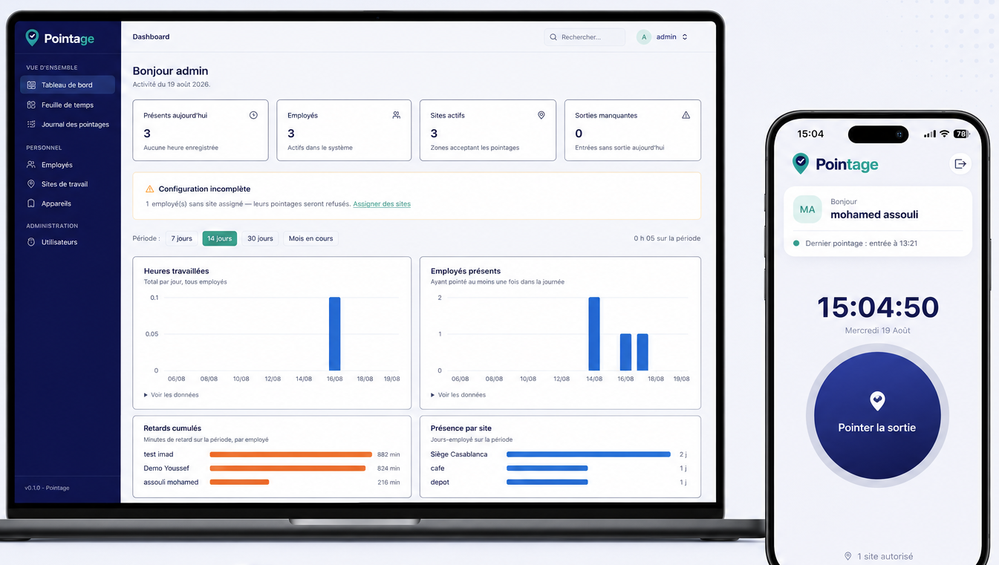

Pointage mobile
Entrée et sortie en un seul geste depuis le smartphone de l'employé. Horloge en direct, rappel du dernier pointage, confirmation immédiate.
Pointage à distance géolocalisé
Vos équipes pointent depuis leur téléphone, uniquement à l'intérieur des zones que vous autorisez. Vous suivez les heures, les retards et la présence en temps réel — sur chantier, en boutique ou en déplacement.

Le problème
Dès que vos équipes travaillent ailleurs qu'au bureau, le suivi redevient artisanal : feuilles de présence, appels de contrôle, et ressaisie en fin de mois. Une borne fixe, elle, ne suit personne sur un chantier ou en tournée.
Fonctionnalités
Une application mobile pour l'employé, une console d'administration pour vous. Rien de plus à installer.
Entrée et sortie en un seul geste depuis le smartphone de l'employé. Horloge en direct, rappel du dernier pointage, confirmation immédiate.
Chaque pointage est vérifié contre les sites autorisés de l'employé. Hors de la zone, il est refusé — et le motif est enregistré.
Présents du jour, heures travaillées, sorties manquantes, présence par site, retards cumulés par employé. Vous voyez l'activité pendant qu'elle se passe.
Les heures se calculent seules. Retards et départs anticipés sont mesurés selon les horaires du site. Export CSV à transmettre au comptable.
Créez vos sites de travail et leurs zones, affectez chaque employé à un ou plusieurs sites, gérez les appareils liés aux comptes.
Un compte est lié à un seul appareil enregistré, les fausses localisations sont détectées, et chaque tentative — acceptée ou refusée — laisse une trace dans le journal.
Comment ça marche
Le paramétrage se fait une fois. Ensuite, tout se passe tout seul.
Adresse, rayon de la zone autorisée, et si vous le souhaitez les horaires d'entrée et de sortie qui serviront à calculer les retards.
Affectez chacun à un ou plusieurs sites, puis créez son accès. Vous lui remettez ses identifiants.
Un bouton pour l'entrée, un pour la sortie. La position est vérifiée avant que le pointage soit accepté.
Le tableau de bord se remplit en direct. En fin de mois, la feuille de temps s'exporte en CSV pour la paie.
Démonstration
Le parcours complet en quelques minutes : création d'un site, pointage depuis le mobile, et suivi en temps réel côté administration.
Cas d'usage
Une zone par chantier, des équipes qui changent de site, et des heures justifiées pour chaque intervenant.
Prises de poste vérifiées sur place, y compris la nuit et le week-end, sans superviseur sur site.
Des agents répartis sur des dizaines de sites clients, et la preuve de présence qui accompagne la facturation.
Chaque point de vente devient une zone. Les ouvertures et les fermetures se suivent depuis un seul écran.
Des équipes en coupure, des horaires décalés, et un calcul de retard qui suit les horaires de l'établissement.
Le pointage se fait chez le client, dans la zone prévue, sans passer par le dépôt le matin.
L'autre solution
Nous fournissons aussi les bornes — empreinte, badge, code ou reconnaissance faciale — nos techniciens les installent chez vous, et elles alimentent le même logiciel de gestion.
Tarifs
Le prix dépend du nombre d'employés et de sites. Dites-nous où vous en êtes, nous vous répondons avec un devis clair.
TPE, un seul site
Sur devis
PME multi-sites
Sur devis
Grands effectifs, besoins spécifiques
Sur devis
FAQ
Pas pour cette solution : vos employés utilisent leur propre téléphone, et vous un navigateur. Si vous préférez une borne à l'entrée, nous fournissons et installons aussi des pointeuses — voir la solution « Pointeuse + système ».
Le pointage est refusé et l'employé voit immédiatement pourquoi. La tentative reste visible dans le journal, avec son motif : hors zone, localisation simulée, ou appareil non reconnu.
Non. Chaque compte est lié à l'appareil sur lequel il a été enregistré. Un pointage venant d'un autre téléphone est rejeté, et changer d'appareil passe par l'administrateur.
Oui. Vous créez autant de sites que nécessaire, chacun avec sa zone et ses horaires, et vous affectez chaque employé aux sites où il est autorisé à pointer.
La feuille de temps se met à jour en continu et s'exporte en CSV sur la période de votre choix. Le fichier s'ouvre dans Excel et se transmet tel quel au comptable.
Chaque entreprise dispose de son propre déploiement, avec sa propre base de données — vos données ne sont mélangées avec celles d'aucun autre client. L'hébergement est convenu avec vous lors de la mise en place.
Comptez une journée. Nous mettons en place votre espace, créons vos premiers sites avec vous, et vos équipes peuvent pointer dès le lendemain matin.
Oui, l'application mobile est disponible pour les deux. La console d'administration s'utilise depuis n'importe quel navigateur, sur ordinateur comme sur tablette.
Parlons-en
Décrivez-nous votre organisation — nombre d'employés, nombre de sites — et nous vous montrons la solution configurée pour votre cas, puis nous vous envoyons un devis.